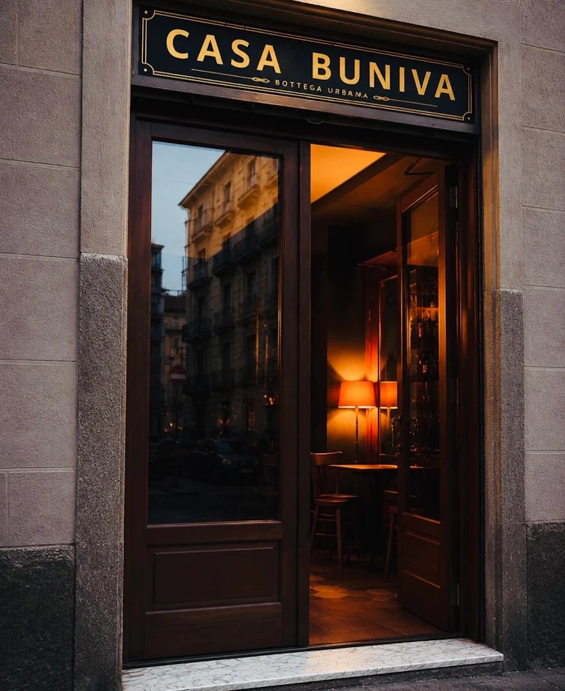
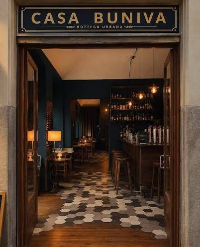
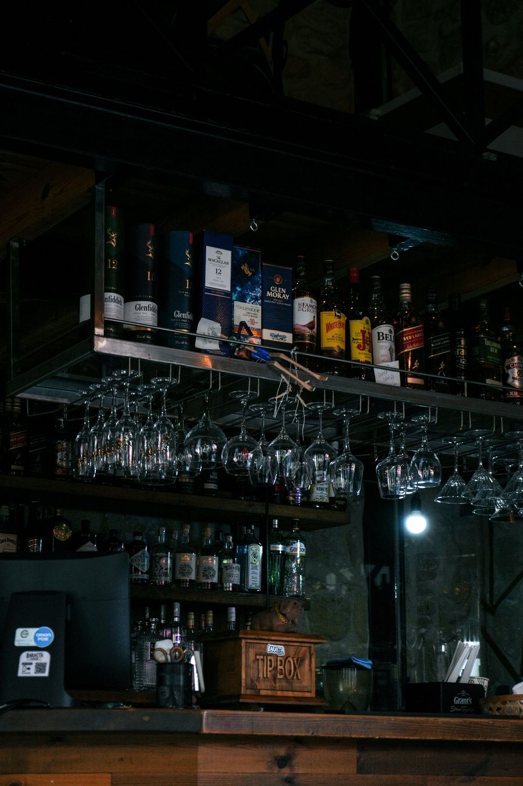
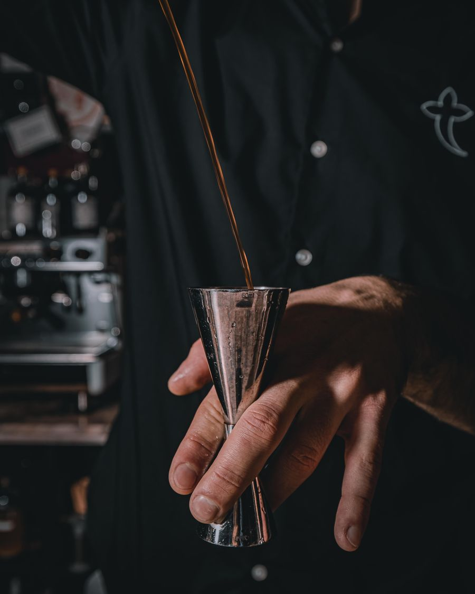

★★★★★
Atmosfera pazzesca, sembra di stare in un salotto degli anni '30. Il Negroni invecchiato in botte è da provare.
Marco R.
Bottega Urbana · Torino
Un bancone di legno, bottiglie controluce e la Torino di sera che si ritrova qui, un bicchiere alla volta.
Scorri per entrare
Casa Buniva nasce come bottega di quartiere prima ancora che come bar: legno massello al bancone, scaffali a vista con le bottiglie illuminate da luce calda, pareti scure e un pavimento a mosaico che profuma di vecchia Torino.
Niente fronzoli, niente finto vintage: solo materiali veri, ricette curate e la sensazione di essere ospiti a casa di qualcuno che sa il fatto suo dietro al bancone.
Legno, ottone, piastrelle esagonali: la bottega parla attraverso ciò che si tocca.
Luce di lampadine calde, poche sedute, conversazioni che si allungano.
Un bancone dove si viene consigliati, non solo serviti.



Anteprima del sito — esempi di recensione in attesa delle prime vere, appena il locale sarà online.
Atmosfera pazzesca, sembra di stare in un salotto degli anni '30. Il Negroni invecchiato in botte è da provare.
Bancone in legno e luci calde, atmosfera bellissima. Personale molto preparato sui vermouth locali.
Locale piccolo ma curatissimo in ogni dettaglio, dal pavimento alle bottiglie. Tornerò per il Bicerin Fuori Orario.
Finalmente un posto a Torino con un'anima vera. I cocktail rileggono la tradizione piemontese con classe.
Ottima selezione di vermouth, serviti come si deve. Location intima, perfetta per un aperitivo lungo.
Design retrò fatto benissimo, non l'ennesimo bar finto vintage. Consigliatissimo per un dopocena.
Via Michele Buniva, 13
10124 Torino · Vanchiglia
Mar – Gio, Domenica 18:00 – 01:00
Ven – Sab 18:00 – 02:00
Lunedì chiuso
Prenotazione obbligatoria · cibo per l'happy hour · piatti vegani disponibili
Prezzo medio a persona: 10–20 €